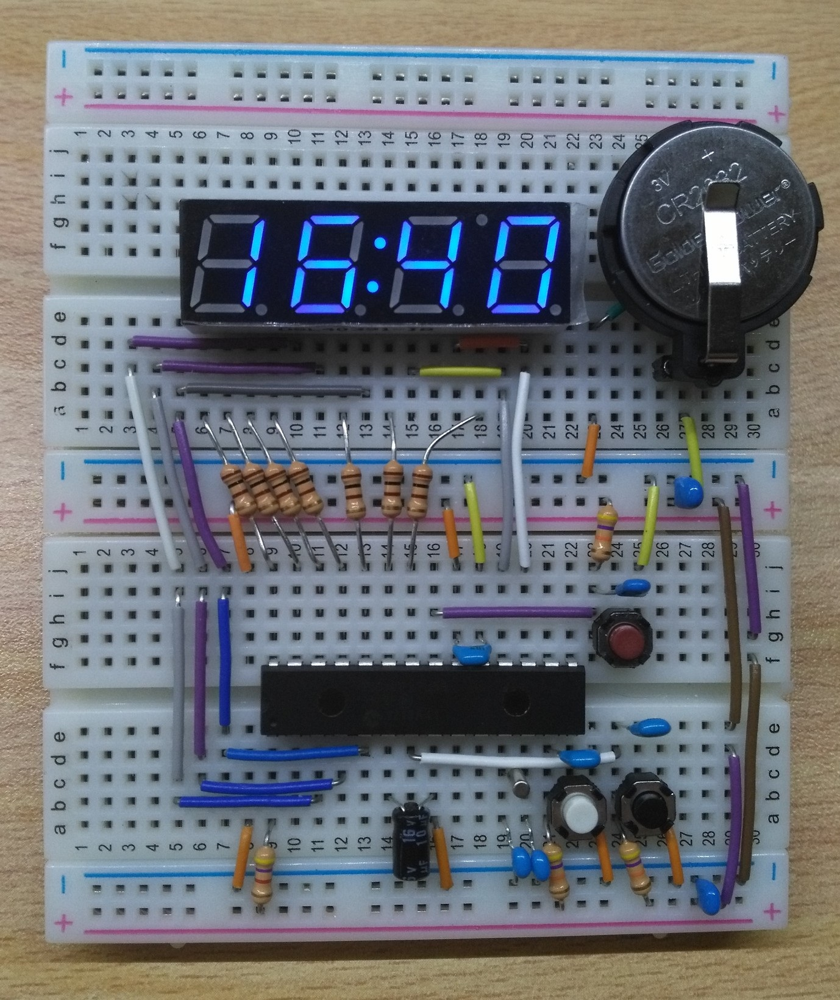
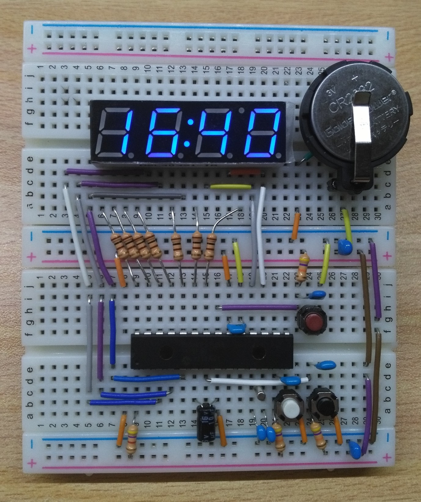

省電力時計
マイコンは「PIC18F27J53」を使用
ブレッドボードで実装


ナノワットテクノロジ-
PIC18F27J53は省電力に特化しています．そんなPICを使って超低消費電力の時計を作りました．
リアルタイムクロックモジュール
PIC18F27J53はリアルタイムクロックモジュールをハードウェアで内蔵しています．これは電力をほとんど消費しない時刻カウンタです．CPUの動作とは関係なく，スリープ中やリセット中でも動作し続けます．
ディープスリープ機能
PIC18F27J53はディープスリープ機能を持っています．普通のスリープとは異なり，CPUの電源を完全に切るので，その間の消費電力はほぼ0です．ただしリアルタイムクロックはCPUと関係ないので動作を続けます．
電流の変化
ダイナミック点灯時
7セグLEDの点灯時は定期的に数mAの電流が流れています．平均は約1mA程度です．これはダイナミック点灯によるものです．
ディープスリープ時
7セグの消灯時は電流が正弦波のように変化しています．平均はわずか1.7μA程度です．これならば数年間は電池交換の必要がありません．